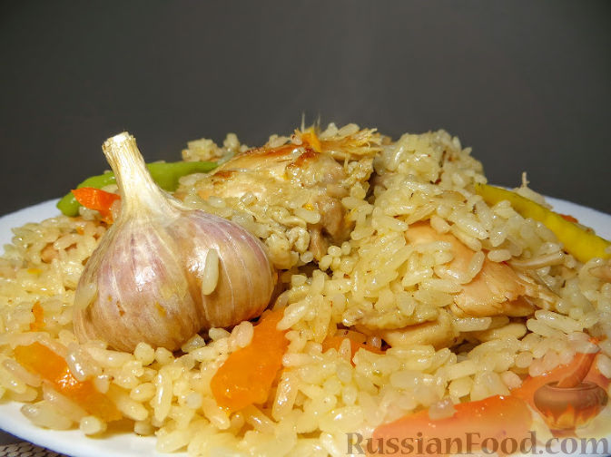

Плов, который всегда получается
Многие боятся готовить плов - то он получается кашей, то сухой, то слишком водянистый. К тому же гуру узбекской кухни любят рассказывать о нем длинно, витиевато и с большим количеством ограничений. Кажется, что сварить плов труднее, чем управлять космическим кораблем. Все совсем не так! Плов - это простая еда. И готовится плов легко и просто! Без всяких понтов и заморочек!
Необходимые ингридиенты:
- Мясо (курица, баранина и т.д.) - 1 кг
- Рис (длиннозерный пропаренный или другой рис) - 1 кг
- Морковь - 1 кг
- Лук репчатый - 4 шт.
- Чеснок - 2 головки
- Перец острый свежий - 2 стручка
- Зира или другие пряности - по вкусу
- Соль - по вкусу
- Масло растительное - 250-300 мл
Приготовление пошагово:
Подготавливаем все продукты для плова. Мясо нарезаем кусочками.
Лук режем кубиками, морковь - достаточно крупными брусочками.
В разогретом казане слегка обжариваем лук на растительном масле.
Добавляем мясо, обжариваем почти до готовности.
Засыпаем морковь, обжариваем. Солим, добавляем специи.
Рис хорошо промываем, засыпаем в казан, перемешиваем и заливаем кипятком, чтобы вода покрывала рис на 2-2,5 см. Воды лучше не долить. Если в процессе готовки окажется, что воды мало, её спокойно можно добавить. А вот если воды будет много, рис гарантированно переварится.
Доводим до кипения, не накрывая крышкой. Пробуем на соль и если нужно досаливаем.
Как только закипит, добавляем целые головки чеснока, очищенные от верхней шелухи, и стручки острого перца. Уменьшаем огонь до минимума, накрываем крышкой и оставляем плов минут на 20. Через 20 минут проверяйте: если рис еще сырой, а воды уже нет - долейте немного горячей воды и снова накройте крышкой. Готовый рис не должен быть слишком мягким.
Выключаем огонь и даем плову постоять минут 15-20.
Традиционно к узбекскому плову готовят салат Ачучук (Ачик-Чучук или, иначе, Шакароб). Готовить его элементарно: нарезаем помидоры и лук, добавляем соль и черный перец. Масло в этот салат не добавляется.
Плов готов! Приятного аппетита!
